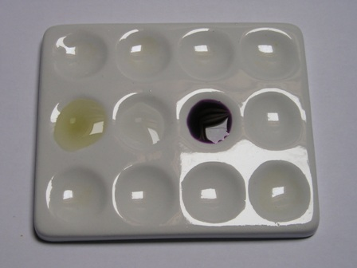
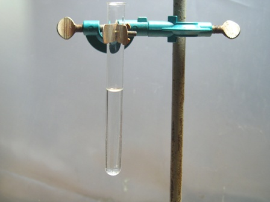
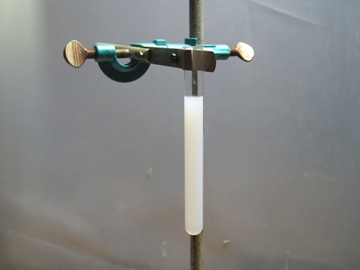
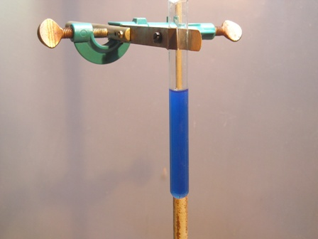

Ed eccoci finalmente al saggio completo del simpatico Sor Lasagna: dobbiamo trovare nel lab una sostanza che contenga tutti e tre insieme gli elementi "sensibili", cioè zolfo, azoto e alogeni, oltre naturalmente a carbonio, idrogeno e ossigeno tipici delle sostanze organiche.
Un po' faticosamente ne ho trovata una che fa proprio al caso nostro: il blù di metilene

Facciamo finta di non saper niente e vediamo se siamo capaci di dimostrare che S, N, e Cl ci sono dentro veramente!
1- Preparare la soluzione madre di Lassigne; ormai la sappiamo fare bella limpida e pura, guardare i post precedenti.
2- Prima di tutto si verifica se c'è lo zolfo. Questo è facilissimo: dieci gocce di soluzione nel pozzetto di una piastrina di porcellana e qualche cristallino di nitroprussiato sodico... et voilà, una istantanea e bellissima colorazione fucsia, che nelle foto appare viola scurissimo.
Non ci sono incertezze, lo zolfo c'è, eccome! Nessun dubbio in proposito.

La foto mostra le tre soluzioni che ho messo nei pozzetti per questa prova: a sinistra la prova in bianco con acqua e nitroprussiato, al centro la soluzione di Lassaigne da sola e a destra l'aggiunta alla medesima del nitroprussiato.
3- Ora, per la ricerca dell'azoto e degli alogeni dobbiamo eliminare lo ione solfuro dalla soluzione.
Prenderne un'aliquota, acidificarla senza esagerare con la bastante quantità di acido nitrico e far bollire (bastano pochi minuti) fino a eliminazione dello zolfo come H2S volatile, o parzialmente come H2SO4 fisso ma che non interferisce.
Dopo la bollitura, lasciando la soluzione acida per HNO3, si esegue il test per gli alogeni.
4- In una provetta mettere alcuni ml di soluzione e aggiungere una decina di gocce di soluzione 0,1 M di nitrato di argento.
Se gli alogeni sono presenti si forma immediatamente il precipitato di alogenuro (AgCl in questo caso), del colore detto in precedenza.


Le foto mostrano la soluzione prima e dopo l'aggiunta di AgNO3: mi pare che non ci siano dubbi nemmeno questa volta, anche il cloro c'è!
5- Andiamo adesso a scovare l'azoto, che è sempre quello (relativamente) più difficile.
Alcalinizziamo leggermente qualche ml di soluzione con la quantità bastante di NaOH diluita e aggiungiamo poi una decina di gocce di soluzione concentrata di solfato ferroso; subito si formerà un precipitato di idrossido ferroso Fe(OH)2 verde grigiastro, assieme a ferrocianuro sodico Na4[Fe(CN)6] invisibile.
Scaldare la soluzione qualche minuto, agitando bene per favorire l'ossidazione; la soluzione sarà di un brutto colore scuro indefinito.
Aggiungere qualche goccia di H2SO4 diluito e... ecco una bella soluzione blù azzurra, tipica del ferrocianuro ferrico quando è in piccola quantità e estremamente disperso.

Le foto sono esplicative.
Questa volta l'azoto si è palesato con moltissima minor evidenza del caso della idrazodicarbonamide (che aveva formato una patacca di blù di Prussia!) ma in ogni caso è saltato fuori anche lui, come volevasi dimostrare.
E se la sostanza incognita fosse liquida, o magari anche volatile?
Il saggio di Lassigne diventa in questo caso assai più delicato nella sua procedura iniziale, ma ci sono degli accorgimenti che ne permettono lo svolgimento in un vastissimo range di casi, fatte salve delle inevitabili eccezioni.
Direi che con Lassaigne ho finito: adesso lascio definitivamente riposare in pace il bravo Jean Louis.